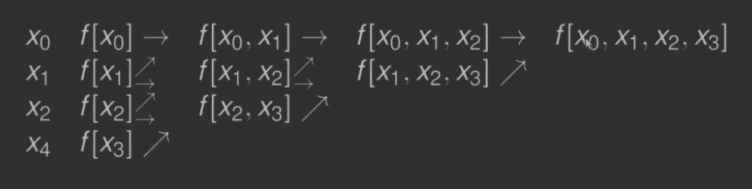
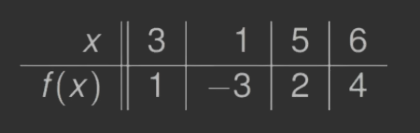

(2020-11-10)
Z Twierdzenie#1 wiemy, że dla różnych węzłów \(x_0, x_1, \dots, x_n\) istnieje dokładnie jeden wielomian \(p \in \Pi_n\) interpolujący \(f\) taki, że \[ p(x_i) = f(x_i) \quad (0 \le i \le n). \]
Wielomian \(p\) można przedstawić jako kombinację liniową wielomianów \(1,x,x^2, \dots, x^n\) (baza \(\Pi_n\)). Jednak takie przedstawienie nie jest zalecane, ponieważ prowadzi do układu z macierzą Vandermonde’a (zadanie źle uwarnukowane).
Przedstawmy \(p\) w innej bazie \(\Pi_n\): \[
\begin{aligned}
q_0(x) &= 1\\
q_1(x) &= (x-x_0)\\
q_2(x) &= (x-x_0)(x-x_1)\\
\dotsb\\
q_n(x) &= (x-x_0) (x - x_1) \dotsb (x - x_{n-1})
\end{aligned}
\]
Czyli mamy \[ p(x) = \sum_{j=0}^n c_j q_j(x). \]
Z faktu, że \(p\) spełnia warunki interpolacji, otrzymujemy układ równań, z którego wyznaczamy \(c_0, c_1, \dots, c_n\): \[ \sum_{j=0}^n c_j q_j (x_i) = f(x_i) \qquad (0 \le i \le n) \]
Rozwiązując układ z góry w dół wyznaczamy \(c_0, c_1, \dots, c_n\). Możemy zauważyć, że - \(c_0\) zależy od \(f(x_0)\) - \(c_1\) zależy od \(f(x_0)\) oraz od \(f(x_1)\) - \(\dots\) - \(c_n\) zależ od \(f\) w punktach \(x_0, x_1, \dots, x_n\).
Wprowadzimy notację \(c_n = f[x_0, x_1, \dots, x_n]\).
\(f[x_0,x_1,\dots,x_n]\) jest współczynnikiem przy \(q_n\).
Jako, że \[ q_n(x) = (x - x_0) (x - x_1) \dotsb (x - x_{n-1}) = x^n + \dotsb \] więc \(f[x_0, x_1, \dots, x_n]\) jest współczynnikiem przy \(x^n\) wielomianu stopnia co najwyżej \(n\) interpolującego \(f\) w węzłach \(x_0, x_1, \dots, x_n\). Wielkość \(f[x_0, x_1, \dots, x_n]\) będziemy nazywali ilorazem różnicowym opartym na węzłach \(x_0, x_1, \dots, x_n\).
Na przykład \(f[x_0]\) jest współczynnikiem przy \(x^0\) wielomianu stopnia \(0\) interpolującego \(f\) w \(x_0\). \[ f[x_0] = f(x_0). \]
\(f[x_0, x_1]\) jest współczynnikiem przy \(x\) wielomianu stopnia \(\le 1\) interpolującego \(f\) w \(x_0, x_1\). \[ p(x) = f(x_0) + \frac{f(x_1) - f(x_0)}{x_1 - x_0} (x - x_0) = f(x_0) + f[x_0, x_1](x - x_0). \]
Ogólnie \(c_i\) wyznaczamy z wcześniejszego układu równań \(c_0 = f[x_0], c_1 = f[x_0, x_1]\) aż do \(c_n = f[x_0, x_1, \dots, x_n]\).
Otrzymujemy postać Newtona wzoru interpolacyjnego \[
p(x) = \sum_{k=0}^n c_k q_k (x) = \sum_{k=0}^n f[x_0, x_1,\dots, x_k] \prod_{j=0}^{k-1} (x - x_j).
\]
Oczywiście: \[ f[x_i] = f(x_i), \qquad (0 \le i \le n). \]
Ilorazy różnicowe spełniają równość: \[ f[x_0,x_1,\dots,x_n] = \frac{f[x_1,x_2,\dots,x_n] - f[x_0,x_1,\dots,x_{n-1}]}{x_n - x_0}. \]
Niech \(p_k \in \Pi_k\) będzie wielomianem interpolującym \(f\) w węzłach \(x_0, \dots, x_k\). Potrzebujemy wielomianów \(p_n\) oraz \(p_{n-1}\). Niech będzie wielomianem \(q \in \Pi_{n-1}\) interpolującym \(f\) w węzłach \(x_1,\dots,x_n\).
Wówczas \[
p_n(x) = q(x) + \frac{x - x_n}{x_n - x_0} \left( q(x) - p_{n-1}(x) \right)
\]
Po obu stronach równości są wielomiany stopnia \(\le n\). Wartości tych wielomianów w punktach \(x_0, x_1, \dots, x_n\) są takie same, co implikuje wielomiany muszą być identyczne. Potrzeba więc mieć po obu stronach identyczne współczynniki przy \(x^n\). Współczynnik wielomianu stopnia \(\le n\) interpolującego \(f\) w punktach \(x_0, x_1, \dots, x_n\) jest równy \(f[x_0, x_1, \dots, x_n]\). Stąd dostajemy \[ f[x_0, x_1, \dots, x_n] = \frac{f[x_1, x_1,\dots, x_n] - f[x_0, x_1, \dots, x_{n-1}]}{x_n - x_0} \]
Jeżeli dana jest tablica wartości funkcji \((x_i, f(x_i))\), wówczas ilorazy różnicowe łatwo obliczamy konstruując tablicę trójkątną.
Przykład: ilorazy różnicowe rzędów \(0,1,2,3\) obliczamy:

Skonstruować tablicę ilorazów różnicowych dla wartości z tabeli:

Korzystając z Twierdzenia#3 konstruujemy tablicę ilorazów różnicowych
Ilorazy różnicowe nie zależą od kolejności węzłów. Jeśli \((z_0,z_1, \dots, z_n)\) jest permutacją \((x_0, x_1, \dots, x_n)\), to \[ f[z_0,z_1,\dots,z_n] = f[x_0,x_1,\dots,x_n]. \]
Iloraz różnicowy jest równy współczynnikowi przy \(x^n\) wielomianu stopnia \(\le n\) interpolującego \(f\) w węzłach \(z_0,z_1,\dots,z_n\). Podobnie iloraz różnicowy \(f[x_0,x_1,\dots,x_n]\) jest równy współczynnikowi przy \(x^n\) wielomianu stopnia \(\le n\) interpolującego \(f\) w węzłach \(x_0,x_1,\dots,x_n\). Wielomiany oczywiście są równe więc współczynniki są równe.
Niech \(p \in \Pi_n\) interpolującym \(f\) różnych węzłach \(x_0,x_1,\dots,x_n\). Jeżeli \(t \neq x_i\), wówczas \[ f(t) - p(t) = f[x_0,x_1,\dots,x_n,t] \prod_{j=0}^n (t-x_j). \]
Niech \(q \in \Pi_{n+1}\) będzie wielomianem interpolującym \(f\) w węzłach \(x_0,x_1,\dots,x_n,t\). Wielomian \(q\) możemy otrzymać z \(p\) przez dodanie jednego czynnika (postać Newtona) \[ q(x) = p(x) + f[x_0,x_1,\dots,x_n,t] \prod_{j=0}^n (x-x_j). \]
Ponieważ \(q(t) = f(t)\) dla \(x = t\). Zatem \[ f(t) - p(t) = f[x_0,x_1,\dots,x_n,t] \prod_{j=0}^n (t - x_j). \]